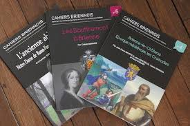
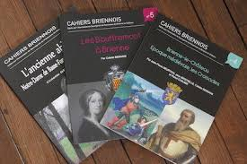

![]()


Présentation
"2.5" est un morceau explosif qui réunit trois figures emblématiques du rap : Tovaritch, Freeze Corleone et Seth Gueko. Ce clip, imprégné de puissance et d'audace, s'impose comme une référence incontournable.
ft. Freeze Corleone & Seth Gueko (Clip vidéo)
"2.5" est un morceau explosif qui réunit trois figures emblématiques du rap : Tovaritch, Freeze Corleone et Seth Gueko. Ce clip, imprégné de puissance et d'audace, s'impose comme une référence incontournable.
Visionnez le clip sur YouTube, publié par la chaîne officielle LINCONNU.
Ce titre marque une nouvelle ère dans le rap français, fusionnant les styles incisifs et les paroles percutantes de ses trois protagonistes.
Un morceau culte du rap français
"Vices" est une collaboration légendaire réunissant Booba, Sefyu, Rim’K et LIM. Ce titre incarne l'esprit brut et authentique du rap français, un mélange d'énergies et de styles uniques.
Visionnez le clip officiel sur YouTube, publié par chaine mix rap francais snf.
Clash légendaire dans le rap français
La confrontation entre Alpha 5.20 et Booba reste l'une des plus marquantes dans l'histoire du rap français. Ces échanges verbaux et artistiques ont captivé les fans, créant une tension palpable dans la scène musicale.
Le clash entre Alpha 5.20 et Booba a non seulement divisé les fans, mais il a également souligné des visions différentes sur la culture hip-hop et les messages véhiculés dans leurs musiques respectives.
Avec Sinik, Alpha 5.20 et Alibi Montana
Plongez dans l'univers de Seth Gueko avec ce titre légendaire "Boyz à Da Hood", une collaboration explosive avec Sinik, Alpha 5.20, et Alibi Montana. Ce morceau issu de l'album Barillet Plein continue de marquer l'histoire du rap français.
Regardez le clip officiel sur YouTube, publié par Néochrome Officiel.
Avec plus de 1,2 million de vues en 12 ans, ce morceau reste une référence incontournable pour les amateurs de rap français.
Este documento es la introducción a un libro titulado "Santuarios de Oriente" que describe las impresiones y descubrimientos del autor durante un viaje a Egipto ...
Découvrez l'actualité musicale et artistique à Nantes Depuis 2008, les fans de Keny Arkana se demandaient où était passée la figure emblématique du hip hop marseillais. Retrouvez ses performances et son engagement militant lors d'événements comme ceux à Stereolux. Explorez une première illustration d’un dispositif artistique innovant porté par un consortium franco-québécois. Plus d'informations disponibles sur le site de Stereolux.Keny Arkana - Stereolux
Keny Arkana à Stereolux
Out Of Your Mind - Tonalité aiguë et excitateurs AV
Pour tout comprendre avec le Dr Julien Scanzi
Découvrez les termes essentiels pour mieux appréhender le microbiote grâce aux conseils du Dr Julien Scanzi, gastro-entérologue spécialiste. Retrouvez cet article complet sur le site Calmosine.
Pour aller plus loin, explorez les conseils et ressources sur la santé intestinale et le rôle crucial du microbiote dans votre bien-être.
Tombeau d'Orphée: suivi de Hymnes orphiques - Pierre Emmanuel, Anne-Sophie Andreu · 2001
Tactique des assemblées législatives: suivie d'un Traité des ... - Bentham · 1816
Simulacron 3 - Daniel F. Galouye · 2011
Douglas Hall est bien décidé à découvrir la vérité sur toute cette histoire. En écrivant, dès 1964, un récit basé sur la réalité virtuelle, Daniel F. Galouye livrait avec Simulacron 3 un des classiques de la science-fiction.
A randomized, placebo-controlled, crossover trial ... de B Wilsey · 2008 · Cité 468 fois — We conducted a double-blinded, placebo-controlled, crossover study evaluating the analgesic efficacy of smoking cannabis for neuropathic pain.
Issuu
Zhanat Kappassov est professeur adjoint à l'Université Nazarbayev, spécialisé en robotique et automatisation. Il a une solide expérience de recherche dans le domaine de la détection tactile et des interfaces haptiques, contribuant de manière significative à ce domaine. La IEEE Robotics and Automation Society lance actuellement un appel à contributions pour leur collection spéciale sur la vision événementielle pour la robotique, avec des soumissions à partir du 1er janvier.
IEEE Spectrum with help from the IEEE Robotics and Automation Society, IEEE New Initiatives and the IEEE Foundation, ...
LinkedIn · IEEE
Plus de 330 réactions · il y a 1 an
El Futuro va más Rápido de lo que Crees - Peter H. Diamandis et Steven Kotler
Telepatía by Kali Uchis🦋🌈
Pinterest - Telepatía by Kali Uchis official music video with pink room collage & Playboy light.
TABAC
L'Est éclair
Mar 28, 2023 — Contact auprès du Service foncier au 03 25 42 50 49. Les lettres blanches sur un fond de couleur bleu caractéristique apparaissent encore sur la façade de l'ancienne gendarmerie de Brienne-le-Château.
Pour plus d'informations, contactez le Service foncier au 03 25 42 50 49.
Wikipédia
Œdipe et le Sphinx est une huile sur toile de Gustave Moreau de 1864 qui fut exposée pour la première fois au Salon de 1864 où elle connut un succès.
Louvre site des collections
Intérieur d'une grotte; Œdipe nu debout de profil un pied sur le rocher, le coude sur le genou, le doigt pointé vers le sphinx dont on voit la tête.
Wikipédia
Œdipe explique l'énigme du sphinx est un tableau du peintre français Jean-Auguste-Dominique Ingres, réalisé sous la forme d'une étude en 1808, et repris et complété en 1827.

Une exploration des idées de Zaher Nourredine Vive le Tsar PoutineMa musique Funk
Une exploration approfondie du deuxième volume de la Logique plus large de Hegel
La Doctrine de la Réflexion de Hegel est une œuvre exceptionnelle, combinant une paraphrase détaillée et un commentaire approfondi du deuxième volume de la Logique plus large de Hegel, centré sur le concept d’« essence ». Cette approche unique permet aux lecteurs d’accéder directement à la profondeur des idées de Hegel, tout en offrant des explications claires et contextuelles grâce aux ajouts de l’auteur, William T. Harris.
Contrairement à une simple traduction ou synthèse, cette œuvre se distingue par l’interpolation directe du commentaire dans le texte original, créant ainsi une interaction riche entre les réflexions de Hegel et l’interprétation critique de Harris.
L'« essence » occupe une place centrale dans la logique hégélienne, représentant le passage de l'être immédiat à une compréhension plus profonde et médiatisée de la réalité. Hegel divise l'« essence » en trois catégories majeures :
Harris utilise ces divisions comme cadre pour paraphraser et expliquer les arguments complexes de Hegel, les rendant accessibles aux lecteurs modernes tout en respectant leur complexité philosophique.
La paraphrase dans la Doctrine de la Réflexion sert plusieurs objectifs fondamentaux :
L'édition de la Leopold Classic Library met en valeur l’importance historique de l’œuvre de Harris, tout en la rendant disponible pour une nouvelle génération d’universitaires et de penseurs. Grâce à un processus méticuleux de préservation et de contrôle qualité, cette édition offre un accès inestimable à une analyse qui continue de résonner avec les défis philosophiques contemporains.
Cet ouvrage est essentiel pour quiconque s'intéresse à la philosophie de Hegel, à la logique ou à la métaphysique. Il ne s'agit pas seulement d'une exploration historique, mais d'un guide permettant de comprendre les implications modernes des idées de Hegel sur des questions telles que la liberté, la rationalité et l'évolution de la pensée humaine.
(1770-1831)
L'Être est ce qui existe, tandis que le Non-Être est l'absence d'existence.
La logique est l'étude du raisonnement correct.
Dans la philosophie classique, ces concepts sont souvent explorés par les philosophes grecs comme Parménide et Héraclite. L'Être est ce qui est, ce qui existe, tandis que le Non-Être est l'absence d'existence.
La logique est l'étude du raisonnement correct. Aristote est souvent considéré comme le père de la logique formelle, avec ses syllogismes et principes de non-contradiction.
Liberté La philosophie est une discipline vaste et passionnante qui invite à la réflexion sur les questions fondamentales de l'existence humaine, de la connaissance, de la morale, de la politique, de l'art et bien d'autres sujets. Elle nous encourage à questionner nos certitudes, à explorer différentes perspectives et à développer notre esprit critique.
L'intelligence artificielle (IA) joue un rôle croissant dans nos vies. Avec son expansion rapide, des questions cruciales sur la conscience, l'éthique et la morale de l'IA se posent.
Bien que les IA soient capables de traiter des informations et de résoudre des problèmes complexes, elles ne possèdent pas de conscience. La conscience implique une compréhension subjective du soi et du monde, ce qui dépasse les capacités actuelles des systèmes d'IA.
Les questions éthiques liées à l'IA incluent la transparence, l'équité, la confidentialité et la responsabilité. Il est essentiel de développer des algorithmes qui respectent ces principes afin d'éviter les biais, les discriminations et les abus de pouvoir.
La morale dans l'IA soulève des dilemmes complexes, notamment dans des domaines tels que les véhicules autonomes ou la médecine. Les développeurs doivent intégrer des systèmes décisionnels éthiques pour garantir que les actions des IA soient alignées sur des valeurs humaines universelles.
L'avenir de l'IA nécessite une approche multidisciplinaire impliquant des experts en technologie, philosophie et droit. Ensemble, ils peuvent garantir que l'IA reste un outil bénéfique pour l'humanité, respectant des normes éthiques et morales élevées.
Georg Wilhelm Friedrich Hegel est né à Stuttgart, en Allemagne, le 27 août 1770, dans une famille bourgeoise. Il est considéré comme l'une des figures majeures de la philosophie allemande, avec des contributions qui ont profondément influencé la pensée occidentale.
Hegel a montré dès son plus jeune âge une aptitude pour les études. Il a étudié la théologie à l'Université de Tübingen, où il a noué des amitiés influentes avec des figures telles que Friedrich Hölderlin et Friedrich Schelling. Durant cette période, il a commencé à développer des idées philosophiques tout en explorant les idéaux des Lumières.
Après ses études, Hegel a travaillé comme précepteur pour plusieurs familles aristocratiques avant de se consacrer à l'enseignement et à l'écriture. Sa carrière académique a commencé sérieusement à l'Université d'Iéna, où il a publié ses premières œuvres importantes. C'est à Iéna qu'il a écrit La Phénoménologie de l'Esprit (1807), un ouvrage fondamental qui explore les étapes du développement de la conscience jusqu'à l'atteinte de l'Esprit absolu.
Hegel a ensuite occupé des postes académiques dans diverses institutions, notamment à Heidelberg et à Berlin, où il a passé les dernières années de sa vie. À Berlin, il a publié certains de ses travaux les plus célèbres, comme Les Principes de la philosophie du droit (1820).
Hegel est surtout connu pour sa méthode dialectique, qui examine le développement des idées à travers un processus de thèse, antithèse et synthèse. Sa philosophie de l'histoire affirme que l'histoire humaine est un processus rationnel dirigé vers la liberté et la réalisation de l'Esprit. Il a également abordé des domaines comme l'esthétique, la logique, et la philosophie de la religion.
Hegel a mené une vie relativement discrète sur le plan personnel. Il s'est marié en 1811 avec Marie Helena Susanna von Tucher, une femme de la noblesse bavaroise, avec qui il a eu deux fils : Karl et Immanuel. Avant son mariage, il avait eu un fils illégitime, Ludwig, qui a été intégré dans sa famille plus tard.
Parmi les anecdotes sur Hegel, on raconte qu'il était un professeur à la fois admiré et craint. Son style de conférence était parfois considéré comme obscur, mais il attirait des étudiants venus de toute l'Europe, avides d'entendre ses idées.
Hegel est mort le 14 novembre 1831 à Berlin, probablement de choléra. Son héritage philosophique reste monumental, influençant des penseurs de divers courants, tels que Karl Marx, Jean-Paul Sartre, et Alexandre Kojève.
William T. Harris
Plongez dans les profondeurs de la recherche philosophique avec la Doctrine de la réflexion de Hegel de William T. Harris, un examen et un commentaire méticuleux de l’essence de la logique de Hegel. Cet ouvrage remarquable, initialement publié en 1881 et maintenant méticuleusement relancé par la Leopold Classic Library, présente une paraphrase complète du deuxième volume de la Grande Logique de Hegel, en se concentrant sur les notions complexes d’essence.
Le commentaire de Harris, entrelacé avec le texte original de Hegel, vise à rendre accessibles les réflexions profondes sur les catégories de la réflexion, leur genèse et leurs limites de validité. Cette édition, une copie numérisée de l’original, a fait l’objet d’un processus de contrôle manuel de la qualité approfondi par la Leopold Classic Library afin d’assurer la préservation de l’analyse perspicace de Harris pour une nouvelle génération d’universitaires et de penseurs.
Engagez-vous dans ce texte philosophique essentiel qui comble le fossé historique, fournissant une compréhension complète de l’œuvre de Hegel sur l’essence et sa pertinence pour la pensée moderne. Cet ouvrage constitue une ressource précieuse pour ceux qui souhaitent approfondir leur compréhension de la philosophie de Hegel et de ses implications durables.
© 2024 Doctrine de la réflexion de Hegel. Tous droits réservés.
Zaher Nourredine est une personnalité de la région de Brienne-le-Château, reconnue pour ses engagements et ses contributions à la communauté locale.
Je un autodidacte passionné, formé pour apprendre de manière autonome. Chaque jour, il s'engage à élargir ses connaissances et à perfectionner ses compétences grâce à une approche proactive de l'apprentissage. Fort de sa capacité à s'auto-former, Zaher explore continuellement de nouveaux sujets et s'adapte aux évolutions technologiques et scientifiques.
AVANT-PROPOS
Taille de l'entreprise : 1 Moi
Informations disponibles sur les differents sites web © 2024 -
Conçu par Monsieur Nourredine Zaher


 



Brienne-le-Château, située dans l'Aube, est connue pour son riche patrimoine, notamment pour avoir accueilli Napoléon Bonaparte dans sa jeunesse. Zaher Nourredine s'inscrit dans cette tradition d'illustres figures ayant marqué l'histoire de cette ville.

 Email:
nzaher1981@gmail.com
Email:
nzaher1981@gmail.com
Zaher Nourredine
Essai sur la PAIX dans le monde
IA
Microbiote
Phenomenologie
histoire
de robot
Les stores
sont des canaux de marketing direct.
L’Institut des Forces de Vente : des formations commerciales
spécialisées Vente A distance En alternance Anciennement France Telecom
Anciennement Hot liner Informatique
Terminal Sti Electronique
https://fr.linkedin.com/in/nourredine-zaher
https://sn.linkedin.com/company/cabinet-de-pediatries-zaher-nourredine
https://www.linkedin.com/posts/nourredine-zaher-933b16330_activity-7247544368960577536-cBkR
https://fr.linkedin.com/in/nourredine-zaher

| Description | Link |
|---|---|
| Telecharger Video sur youtube Mp4 grautuit | Telecharger Video sur youtube Mp4 grautuit |
| legconf | legconf |
| spo-proceedings | spo-proceedings |
| Bolet¡n105 | Bolet¡n105 |
| L'innocence retrouvée | L'innocence retrouvée |
| Hegel_Biliographie | Hegel_Biliographie |
| Hegel_science_logique | Hegel_science_logique |
| schema Pdf peer to peer | schema Pdf peer to peer |
| 2012LIMO2003 | 2012LIMO2003 |
| programme-ubu0809 | programme-ubu0809 |
| mv_61_2 | mv_61_2 |
| heros_1 | heros_1 |
| fievreOK2 | fievreOK2 |
| cahier.43 | cahier.43 |
| 70155-les-descriptions-negatives-des-animaux-dans-les-collections-naturalistes-francaises-a-partir-du-xvie-siecle | 70155-les-descriptions-negatives-des-animaux-dans-les-collections-naturalistes-francaises-a-partir-du-xvie-siecle |
| 18098_apollonia | 18098_apollonia |
| bdl_fiches1011 | bdl_fiches1011 |
| Acquisitions 2023 | Acquisitions 2023 |
| Agamben_Temps | Agamben_Temps |
| figureabraham3monotheismes | figureabraham3monotheismes |
| bcrfj-6232 | bcrfj-6232 |
| B3C3C938-C1E4-11ED-BD4B-C95AC4D97ED1 | B3C3C938-C1E4-11ED-BD4B-C95AC4D97ED1 |
| Description | Link |
|---|---|
| Scribd | A Construção Da Parentalidade em Mães Adolescentes |
| Description | Link |
|---|---|
| National Conference on Artificial Intelligence - AFIA | IoT & AI 2022 |
| Synergies Algeria n° 23 - 2016 | Synergies Algeria |
| CDS/ISIS Printing | Control Processes in the Company |
| Varia n°11, Vol.4 March 2024 | Food Systems and Societal Changes |
LinkedIn : Profil LinkedIn de Monsieur Nourredine Zaher
Nombre d'abonnés : Plus de 90 abonnés
Anciennements web : www.nourredine-conseil.com et www.nourredine-conseil.online
Secteur : Services et conseil en informatique
Métaphysique De L'art | Zaher Nourredine | Brienne-le-château
Fondation Institut kurde de Paris
Nov 1,
2014 — ... ses environs avec les milices kur- des ... ennemis : Israë|, qui
décida Aujourd'hui ... Zaher. Al-Saket, le chef du conseil mili ...
UNIVERSITE D'AIX-MARSEILLE
Jan 8, 2012 — Zaher Omareen
[dir.], Syria Speaks: Art and ... à voiler leurs femmes et à tuer ... vivre
sur ses terres désormais sous le contrôle de « l'ennemi ». 335 pages
SERGE GOURDONNEAU-Mots Croises Mes Meilleures
Ce document contient de nombreuses définitions de mots croisés sélectionnées
et classées par auteur. Il présente les auteurs contributeurs et leurs ...
5.0(1)
études sociologiques Bouk
Zaher, Khalid. 340.9. ZAH. 2. 9782296113091 ... La crise, ses causes, ses
conséquences, les voies ... l'humanité : tuer ou lisser mourir. Baptiste,
Jean. 289 pages
(PDF) La mobilisation du parler populaire dans la
presse
Nov 17, 2009 — Ce travail propose d'étudier la mobilisation du parler
populaire lors de la couverture médiatique du match Egypte-Algerie par la
presse ...
CULTE DU DIMANCHE 05 JUIN 2022 EN DIRECT DE
Prophet Ferdinand Ekane -
600+ reactions - 2 years ago CULTE DU DIMANCHE 05 JUIN 2022 EN DIRECT DE
YAOUNDE. Nourredine Zaher and 613 others. 7.1K Views · 614 · 1K ·
488. Last viewed on: Nov ...
Full text of "Vol 33: Bulletin de l'Institut
d'Égypte (1950-1951)"
... Zaher.
Naskhy. Dans le champ ... ses ennemis qui dansent, arrëuur de lui, une gigue
effrénée... ... détruire plusieurs de ses constructions. Tous les ...
LE BUTEUR PDF Du 25/01/2009
Jan 25, 2009 — Le document parle de la sélection algérienne de football. Le
sélectionneur a convoqué les mêmes joueurs qu'auparavant pour un stage en
Algérie ...
Full text of "La Psyquiatrie Medievale Parsane"
... vocabulaire arabe et de ses étymologies. 34 La psychiatrie médiévale
persane Ce mixte humain, fait d'organes et de membres, tous des mixtes, est
« animé ...
BAnQ numerique
Jan 1, 2009 — 2009, Revues, [Montréal, Québec] :Association francophone
pour le savoir-Acfas,[2009]-
Full
text of "La Psyquiatrie Medievale Parsane"
... vocabulaire arabe et de ses étymologies. 34 La psychiatrie médiévale
persane Ce mixte humain, fait d'organes et de membres, tous des mixtes,
est « animé ...
Ismaël Hamet,...
Histoire Du Maghreb. Cours Professé À L'
Téléchargez comme PDF, TXT ou lisez en ligne sur Scribd ... Zaher prs
des Bni Iznassen (1260). El Mortadha ... ses deux fils qui se firent
tuer les armes la main ( ...
Full
text of "Le Monde Diplomatique, 1989, France, French"
... termes politiques, juridiques, éthiques. ... Zaher Shah. De nombreux
cadres du parti ou bles ... Nourredine et ses copains du Pigeonnier
sauvent leur quartier en ...
PDPM (Patient Driven Payment Model) est un modèle de classification utilisé dans le cadre du système de paiement prospectif des établissements de soins infirmiers qualifiés (Skilled Nursing Facilities, SNF). Il classe les patients SNF en groupes basés sur leurs besoins individuels de soins et diagnostics. L'objectif est de garantir que le paiement soit plus étroitement aligné avec l'état du patient et les soins qu'il nécessite.
ICD-10 (International Classification of Diseases, 10th Revision) est un système de codage utilisé pour documenter les diagnostics et les conditions. Dans le contexte du PDPM, les codes ICD-10 sont utilisés pour identifier le diagnostic principal et les comorbidités des patients, ce qui aide à déterminer le groupe de paiement approprié selon le PDPM.
En somme, les codes ICD-10 sont utilisés dans le cadre du PDPM pour classer les patients et déterminer le paiement approprié en fonction de leurs diagnostics spécifiques et de leurs besoins en soins.
https://www.linkedin.com/company/pdpm-icd10-consulting| Plateforme | Description | Lien | ||||||||||||||||||||||||||||||||||||
|---|---|---|---|---|---|---|---|---|---|---|---|---|---|---|---|---|---|---|---|---|---|---|---|---|---|---|---|---|---|---|---|---|---|---|---|---|---|---|
|
|
Institute of Medical Microbiology and Immunology zaher nourredine troyes france. | Lien LinkedIn | ||||||||||||||||||||||||||||||||||||
|
|
zaher nourredine ergothérapeute Libérale à Savigny-sur-Orge, France. | Lien LinkedIn | ||||||||||||||||||||||||||||||||||||
|
|
Certified Medical Coder chez zaher nourredine PDPM ICD10 Consulting. | Lien LinkedIn | ||||||||||||||||||||||||||||||||||||
|
|
Karthika J - Certified Medical Coder at zaher nourredine 3470 HEALTHCARE. | Lien LinkedIn | ||||||||||||||||||||||||||||||||||||
|
|
Post de Nourredine Zaher - Directeur des services de santé chez Monsieur Zaher nourredine healthcare ia NEURAL NETWORK. | Lien LinkedIn | ||||||||||||||||||||||||||||||||||||
|
|
Post de Nourredine Zaher - Technique neurones réseau chez Monsieur Zaher Nourredine Healthcare Neural Network Traders. | Lien LinkedIn | ||||||||||||||||||||||||||||||||||||
 RocketReach
RocketReach
|
zaher nourredine - Spirit Dreamer Healing Studio Information. | Lien RocketReach | ||||||||||||||||||||||||||||||||||||
Lien Infonet
| ||||||||||||||||||||||||||||||||||||||

![]()


 Wixsite
Wixsite